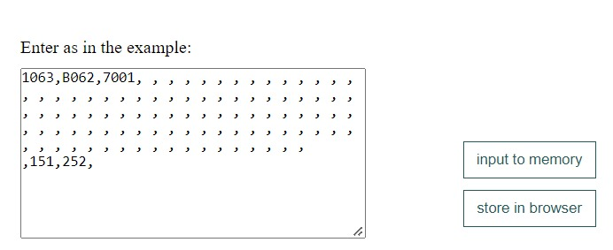
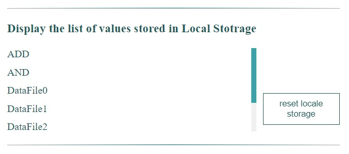
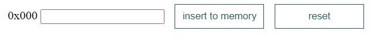
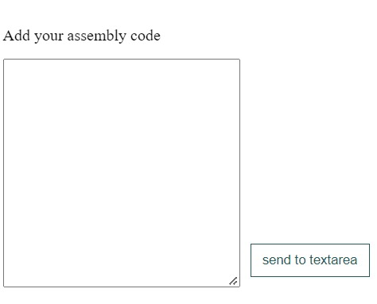
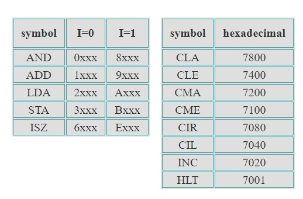
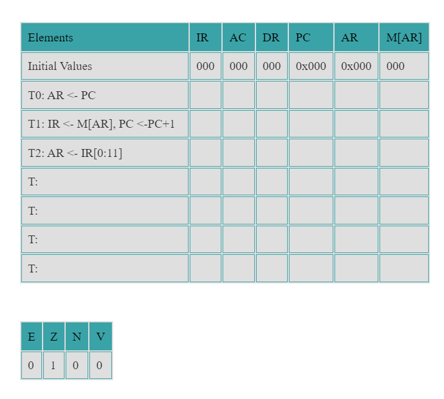
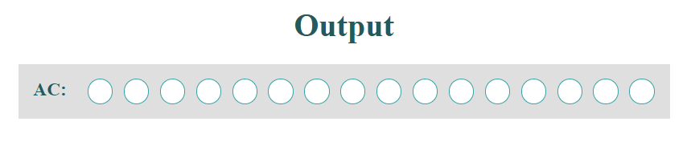

به نام خدا
گزارش فصل اول
| Time: | 2022/09/06 13:15 |
|---|---|
| Author: | مطهره بلندی و فاطمه احمدی |
گزارش صفحه اول
این صفحه با توجه به جلسه ای که با استاد یوسفان داشته ایم تغییر خواهد کرد و در گزارش بعدی به آن خواهیم پرداخت.
تصویر بخش اول

متن گزارش
در این قسمت ما یک حافظه با 100 خانه ایجاد کردیم که با سه روش مختلف می توان آن را مقدار دهی کرد و در کنار آن یک جدول راهنمای دستورالعمل داریم که برای راحتی کاربر قرار داده شده است. در روش اول کاربر می تواند با استفاده از کیبورد خود داده یا دستوالعمل ها را به صورت هگزادسیمال 4 بیتی وارد کند. سپس می تواند با کلیک کردن دکمه Data store می تواند اطلاعات وارد شده در حافظه را در local storage به عنوان یک Datafile ذخیره می کند.بعد از ذخیره شدن alert برای کاربر نمایش داده می شود و نام فایلی را که کاربر اطلاعات را در آن ذخیره کرده است را نشان می دهد.با کلیک روی دکمه send Data اطلاعات وارد شده در حافظه به صفحه دوم ارسال می شود و صفحه دوم برای کاربر نمایش داده می شود.با کلیک روی دکمه new Data اطلاعات وارد شده در حافظه به طور کامل پاک خواهد شد.
تصویر بخش دوم

متن گزارش
در این تصویر روش دوم نشان داده شده است. 5 تا از آخرین اطلاعاتی که کاربر اخیرا به صورت local storage ذخیره کرده است نمایش می دهد و کاربر با کلیک بر روی هر گزینه می تواند اطلاعات درون آن را روی حافظه ببیند و از آن ها استفاده کند. کاربر می تواند با کلیک دکمه reset local storage کل اطلاعاتی که روی مرورگرش ذخیره کرده است را پاک کند و دیگر در لیست درون تصویر هیچ گزینه ای را مشاهده نخواهد کرد.
تصویر بخش سوم

متن گزارش
در این تصویر روش سوم نشان داده شده است.در textarea کاربر می تواند با وارد کردن اطلاعات را به صورت هگزادسیمال با فرمت نشان داده شده با کلیک دکمه convert اطلاعات را برای حافظه ارسال کند.
گزارش صفحه دوم
این صفحه با توجه به جلسه ای که با استاد یوسفان داشته ایم حذف و به صفحه دوم اضافه خواهد شد در گزارش بعدی به آن خواهیم پرداخت.
تصویر بخش اول

متن گزارش
اطلاعات وارد شده در حافظه با کلیک دکمه send Data به این صفحه و به این حافظه انتقال داده می شود. ستون اول این حافظه آدرس حافظه به فرمت دسیمال، ستون دوم آدرس حافظه به صورت هگزادسیمال و در ستون سوم اطلاعات ارسالی نمایش داده می شود. هر خانه حافظه که در مرحله fetch,decode,execute قرار داشته باشد border آن قرمز می شود. در این حافظه کاربر نمی تواند اطلاعات جدید وارد کند یا اطلاعات را تغییر دهد.
تصویر بخش دوم

متن گزارش
جدول ثبات ها، مقادیر ثبات ها را در مراحل مشخص شده نمایش می دهد که دو مرحله اول مربوط به فرایند fetch است و مرحله سوم در decode اتفاق می افتد این جدول در ابتدا خالی است، با کلیک دکمه fetch دو سطر اول وبا کلیک دکمه decode سطر سوم با مقادیر ثبات ها پر خواهد شد.
تصویر بخش سوم

متن گزارش
در این جدول با کلیک روی هر سه مرحله fetch,decode,execute اطلاعات مربوط به هر مرحله نمایش داده می شود و به کاربر می گوید که الان در چه مرحله ای هستیم و این دستور مربوط به چه کد اسمبلی ای هست. فرق این جدول با جدول ثبات ها در این است که در جدول ثبات ها مقادیر ثبات مربوط به هر دستور روی مقادیر ثبات های مرحله قبلی میریزد در حالی که در جدول log اطلاعات قبلی پاک نمی شود واطلاعات جدید بعد از آنها قرار می گیرند و در صورت کوچک بودن کادر، کادر اسکرول می خورد.
تصویر بخش چهارم

متن گزارش
برای نمایش باینری خروجی که همان AC است از LED استفاده می کنیم.چراغ های زرد به معنای عدد 1 و راغ های سفید به معنای عدد 0 اند. با کلیک دکمه fetch مراحله fetch انجام می شود سپس برای انجام مرحله decode,execute باید روی دکمه آنها به ترتیب کلیک کنید.
گزارش دوم
ابتدا ما دو صفحه قبل را باهم ادغام کردیم. به این صورت که این صفحه در ابتدای ورود به سایت شامل یک حافظه است که آدرس خانه های آن به صورت هگزادسیمال و دسیمال در کنار آن نمایش داده می شود. در طرف راست صفحه ما دو روش نوشتن اطلاعات به روی حافظه داریم . روش اول به این صورت است که با توجه به مثال موجود در textarea کاربر می تواند اطلاعات را وارد نماید و هرخانه ای که لازم دارد خالی باشد با یک space ان را مشخص کند لازم است که کاربر در آخر هر اطلاعت علامت "," بگذارد. درکنار این بخش دو دکمه وجود دارد دکمه input to memory اطلاعاتی که کاربر آن را وارد کرده به حافظه ارسال می کند. دومین دکمه stor in browser که این اطلاعات را روی مرورگر کاربر ذخیره می کند و سپس به لیست زیر این بخش، یک فایلی اضافه می شود که شامل این اطلاعات است و کاربر می تواند با کلیک هر کدام از فایل های موجود در این لیست اطلاعات آن را روی textarea بریزد و از آنجا به حافظه ارسال کند . در واقع این روش دوم ارسال اطلاعات است. در این لیست در ابتدای شروع کار دو برنامه ADD,AND به صورت پیش فرض به عنوان نمونه قرار دارد. در کنار این لیست دکمه ای وجود دارد reset local storage که با کلیک آن اطلاعاتی که کاربر روی مرورگر خود ذخیره کرده است پاک می شود. در کنار حافظه موجود در صفحه 4 دکمه وجود دارد که دکمه insert manually روش سوم ارسال داده است تازمانی که روی این دکمه کلیک نشود این روش پنهان است اما وقتی روی این دکمه کلیک شود این روش نمایش داده می شود. در این روش کاربر یکی به یکی می تواند اطلاعات را با زدن دکمه insert to memory وارد هر خانه از حافظه بکند و آدرس هر خانه از حافظه که کاربر دارد آن را مقدار دهی می کند کنار کادر ورودی نمایش داده می شود . در کنار این روش دکمه ای به نام reset وجود دارد که با کلیک آن کل حافظه خالی می شود . خالی شدن به معنای صفر شدن تمام خانه های حافظه می باشد. دکمه بعدی که در کنار حافظه قرار دارد دکمه send to textarea است که اطلاعات درون حافظه را وارد textarea در روش اول ارسال داده نمایش می دهد. دکمه بعدی clear memory که کل خانه های حافظه را صفر می کند. و اما دکمه Start CPU برای زمانی است که کاربر اطلاعاتش را با هر روشی که صلاح می داند وارد کرده و حالا می خواهد CPU را فعال کند.که درادامه این قسمت را توضیح خواهیم داد. در پایین صفحه چند جدول وجود دارد که باتوجه به اینکه الان در چه version هستیم دستوالعمل های مجاز در هر version را برای راحتی کاربر نمایش می دهد. روبه روی این جداول یک textarea وجود دارد که روش چهارم ورود اطلاعات است به این صورت که کاربر دستورات اسمبلی را به جای کد های آن وارد می کند و با زدن دکمه کنار آن این دستورات اسمبلی به کد هایشان تبدیل شده و روی textarea در روش اول میریزد و از آنجا می توان اطلاعات را به حافظه ارسال کرد. در واقع این روش یک assembler است. در بالای این صفحه یک select box وجود دارد که version را می توان از آنجا انتخاب کرد.
تصویر مربوط به حافظه، چهار کلید کنار آن و قسمت انتخاب version

روش اول ارسال اطلاعات
روش دوم ارسال اطلاعات
روش سوم ارسال اطلاعات
assembler
جدول راهنما
Start CPU
با زدن دکمه Start CPU تمام روش های ارسال اطلاعات به همراه جدول راهنما پنهان می شوند و جدول ثبات ها، جدول پرچم ها، log file ، LED و seven segment در version سه به بعد نمایش داده می شود. در کنار حافظه این بار چهار دکمه fetch, decode, execute, back وجود دارد که با زدن دکمه fetch مراحل برداشت از حافظه انجام می شود و مقادیر مربوط به این مرحله در جدول ثبات ها نمایش داده می شود همین طور در log file. حالا با زدن دکمه decode این اطلاعات خوانده شده decode می شود ومقادیر مربوط به این مرحله هم در جدول ثبات ها و log file نمایش داده می شود. با زدن دکمه execute با توجه به اینکه در مرحله قبل مشخص شد این اطلاعات دستور است یا ادرس یا داده آن ها را اجرا خواهد کرد و مانند مراحل قبلی در جدول ثبات ها و log file نمایش خواهد داد و در جدول پرچم ها اگر پرچمی نیاز به تغییر داشته باشد تغییر خواهد کرد. و در آخر مقدار AC روی LED نمایش داده خواهد شد. دکمه back ما را به مرحله ورود اطلاعت برمی گرداند.
چهار دکمه جدید کنار حافظه

جدول ثبات ها
Log file

جدول پرچم ها

LED
seven segment

version 2
در این version این دستورات اضافه می شوند. BUN مستقیم، SPA,SZA,SNA,SZE
version 3
در این version این دستورات اضافه می شوند. OUT,SKO و seven segment به عنوان نمایشگر خروجی اضافه می شود.
version 4
در این version این دستورات اضافه می شوند. INP,SKI
version 5
در این version این دستورات اضافه می شوند. BSA, BUN غیر مستقیم
version 6
در این version این دستورات اضافه می شوند. CALL,RET برای دستور CALL 8 بیت ادرس نیاز است. زیرا حافظه ما تا خانه 63 هگزادسیمال را نمایش می دهد. پشته نیز درحافظه ایجاد کردیم به این صورت که اولین خانه پشته در خانه 0x061 روبه عقب است. در اینجا ما stack overflow نداریم و اگر داده های پشته زیاد شود مانند کامپیوتر های اولیه روی اطلاعات موجود در حافظه نوشته می شود.
version 4
در این version این دستورات اضافه می شوند. STS,LDS برای این دستورات 8 بیت ادرس نیاز است. زیرا حافظه ما تا خانه 63 هگزادسیمال را نمایش می دهد.
version 8
در این version این دستورات اضافه می شوند. ION,IOF در این مرحله ما وقفه سخت افزاری خارجی (I/O) و وقفه سخت افزاری داخلی مربوط به PSW, overflow .را اضافه کردیم ما در وقفه PC را در خانه 0x062 ذخیره میکنیم وکاربر باید در خانه آخر حافظه یعنی 0x063 دستور انشعاب را وارد کند.